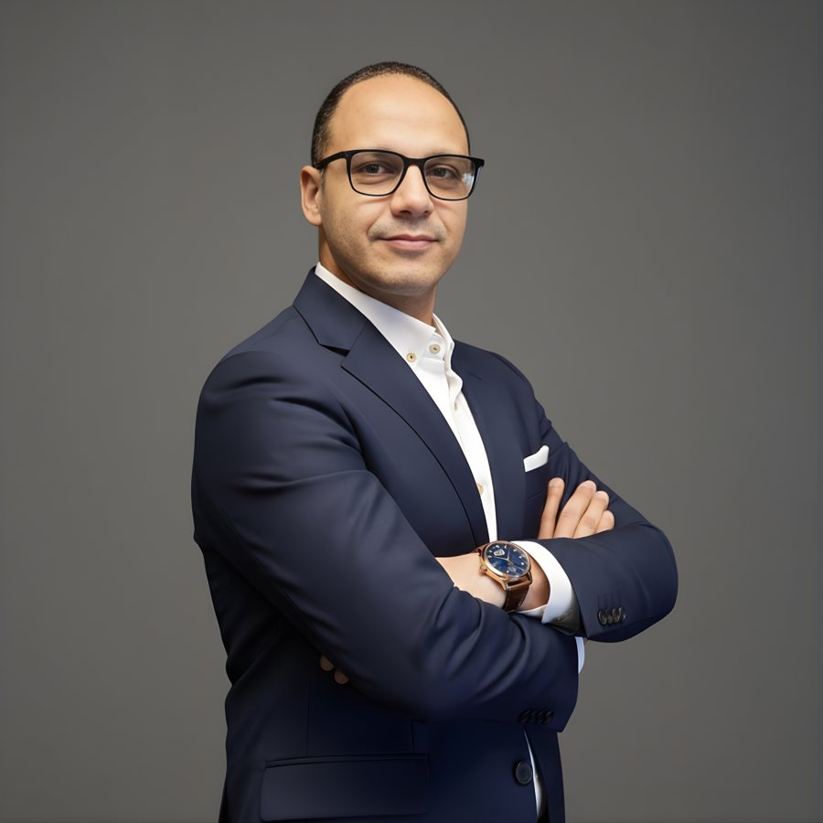

Years of professional experience
From instructional design and learning to HR and organizational development.
ORGANIZATIONAL DEVELOPMENT & HR
I’m Omar Raafat, an Organizational Development professional focused on organizational design, people systems, and practical HR solutions that support business growth.

My work sits at the intersection of organizational effectiveness and people management. I develop structures, job architecture, competency frameworks, performance systems, and compensation approaches that help organizations operate with clarity and consistency.
I bring a practical, data-informed mindset to designing people solutions — connecting policies and frameworks to the way work actually happens.
oraafat13@gmail.com ↗A snapshot of the breadth and scale of my work across learning, recruitment, organizational development, and HR systems.
From instructional design and learning to HR and organizational development.
Across recruitment, training, organizational development, and HR business partnering.
Recruitment and workforce mobilization for branch openings at Fathalla Markets.
A structured job evaluation methodology based on weighted compensable factors to assess job value, establish internal equity, and support consistent job grading.
Core disciplines I use to build effective, scalable people systems.
Organizational structures, role clarity, job analysis, and workforce planning.
Job descriptions, job evaluation, grading frameworks, and career paths.
Salary structures, compensation frameworks, and internal equity.
Performance frameworks, KPI architecture, and improvement plans.
Competency models, succession planning, and development frameworks.
Policies, SOPs, dashboards, and workforce reporting.
Explore my experience company by company. Each profile brings together the responsibilities, systems, and deliverables I worked on, with a clear distinction between direct ownership, implementation, review, and advisory support.
Organizational Development Supervisor · Group-level OD, job architecture, compensation frameworks, competency systems, manpower planning, and HR governance across a shared-services model.
Recruitment, Organizational Development & Training · Full-cycle recruitment, new-branch staffing, HR systems, job evaluation, salary structure, and in-house training.
HR Business Partner · Built and operated integrated HR and OD systems, combining hands-on delivery with supervision of a small HR team.
Organizational Development Specialist · Experience across organizational development, job descriptions, structures, policies and process documentation, performance, competencies, and talent initiatives.
ⓘExperience descriptions distinguish direct execution from supervision, review, and advisory responsibilities. Confidential company information and employee data are not disclosed.
Developing HR policies and job descriptions; leading organizational change and restructuring; conducting job analysis and evaluation; designing salary and compensation frameworks; and preparing OD reports and workforce analytics.
Supported OD initiatives and HR projects, maintained job descriptions and organizational structures, developed policies and process documentation, and contributed to performance, competency, and talent initiatives.
Contributed to the 3R initiative, updated work forms and policy manuals, supported succession planning, and conducted job analysis and evaluation.
Supported team restructuring, HR policy application, and talent identification and development planning.
Managed recruitment for blue-collar and white-collar roles and supported staffing and onboarding for branch openings.
Identified training needs, designed and delivered programs, and prepared an annual training plan.
Designed learning content, collaborated with subject matter experts, assessed learning needs, and reviewed training effectiveness.
Professional certifications, specialist courses, and academic foundations that support my work.
For professional opportunities, collaboration, or a conversation about organizational development and HR.